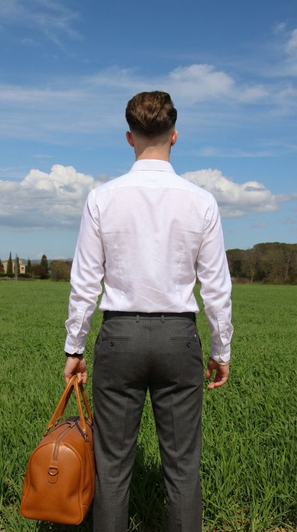

Sobre mi
Hola! Sóc en Pere.
Sóc de la Costa Brava, a Catalunya. La passió per la comunicació visual em va arribar als 14 anys, gestionant comptes d'Instagram d'estètica digital i dibuix. Després vaig crear dues marques de roba amb un soci i avui dirigeixo Can Colls Disseny. Des del curs passat estudio el Cicle Formatiu de Grau Superior de Màrqueting i Publicitat a Girona, i també estic aprenent a crear webs.
M'agraden les idees crítiques i treballar al costat del client. Faig identitats versàtils, amb caràcter i atemporals, i hi poso estratègia i anàlisi.
Experiència
- 2026Can Colls DissenyFundador. Branding per a petits negocis
- 2024 –Mas BarromboIdentitat digital, xarxes i Airbnb de la casa rural
- 2025DParadise i Fox RidesCofundador, juntament amb un soci
- En curs@collsblancoCreació de contingut i carrusels per a Instagram
Estudis
- 2025 –CFGS de Màrqueting i PublicitatGirona. En curs
- 2021–23Cicle d'Activitats ComercialsINS Sant Feliu de Guíxols. Aparadorisme i contingut visual
- 2024Seguretat marítima bàsicaBon Port Marine Services
- —Tècniques mecanogràfiquesCertificat
El meu enfocament
BrandingDisseny gràficCartelleriaContingutAparadorismeCreació de webs · aprenent
Eines
AffinityIA generativa d'imatgeIA de vídeoInstagram